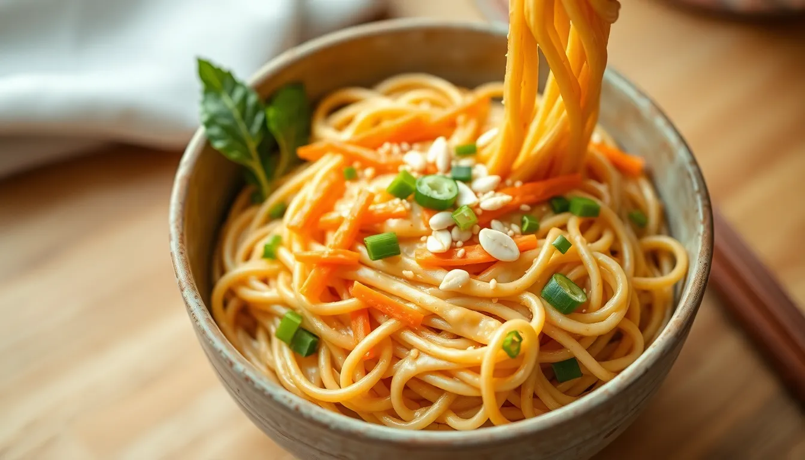

Peanut Noodles
Prep time: 10 minutes - Cook time: 12 minutes - Total time: 22 minutes
Estimated total cost: $7.90 - Estimated cost per serving: $1.98 - Serves: 4

Ingredients
- 8 ounces spaghetti or noodles of choice — $1.20
- 1/2 cup peanut butter — $1.00
- 2 tablespoons soy sauce — $0.30
- 1 tablespoon maple syrup or sugar — $0.20
- 1 tablespoon rice vinegar or lime juice — $0.25
- 2 cloves garlic, minced — $0.20
- 1/2 teaspoon ground ginger or 1 teaspoon fresh ginger — $0.15
- 1 tablespoon oil or warm water to thin sauce — $0.10
- 1 small carrot, shredded — $0.30
- 2 green onions, sliced — $0.35
- Optional: red pepper flakes or hot sauce — $0.10
Estimated ingredient total: $4.15 to $4.55
Displayed website estimate: $7.90
Detailed Instructions
- Bring a pot of salted water to a boil and cook the noodles according to package directions.
- While the noodles cook, make the sauce by stirring together the peanut butter, soy sauce, maple syrup, vinegar or lime juice, garlic, and ginger.
- Add 1 to 3 tablespoons of warm water until the sauce becomes smooth and pourable.
- Shred the carrot and slice the green onions.
- Drain the noodles, reserving a little pasta water if needed.
- Return the noodles to the pot or place them in a large bowl.
- Pour the peanut sauce over the hot noodles and toss until evenly coated.
- If the sauce feels too thick, add a small splash of pasta water and toss again.
- Mix in the carrot and half the green onions.
- Taste and adjust with more soy sauce, sweetener, or heat if needed.
- Divide into bowls and top with the remaining green onions.
Helpful Notes
- This can be served warm or cold.
- Add chopped cabbage or frozen edamame if you want more bulk.
- Thin spaghetti works especially well for this style of sauce.
Price Note
Ingredient prices can vary by store, brand, and region, so these are planning estimates rather than exact totals.